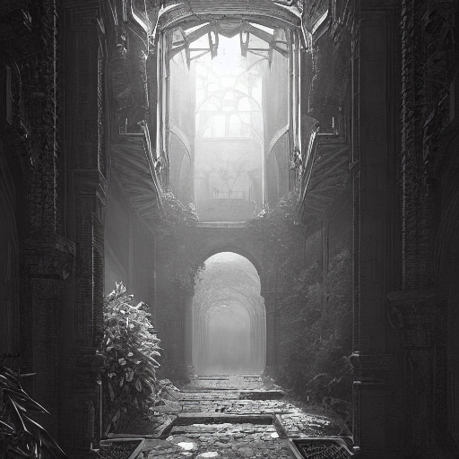
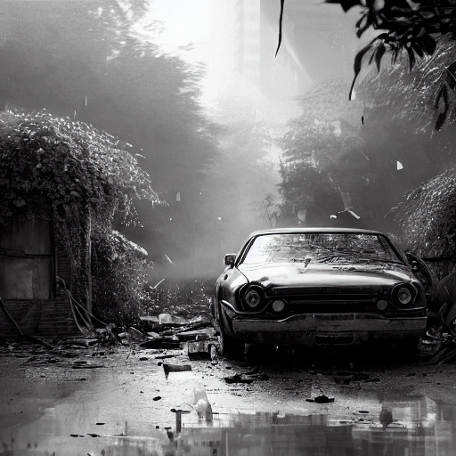

The Cryptwalker

Chapter 1
The Dungeon
In a dark dungeon, an old man awakens, his memories foggy. As he navigates the maze, fragments emerge: a little girl crossing a road, oblivious to danger. Inhuman sounds echo, accompanied by thunderous footsteps. Determined, he presses on, driven by the urgency of forgotten truths.
Chapter 2
The Accident
In the dungeon's depths, memories surge back to the old man. He recalls the road, the little girl, and his instinctive leap to save her from an oncoming car, sacrificing himself. Yet, as he navigates the gloomy passages, he questions why he still lives, pondering how he arrived in this decolate place. Each step fuels his uncertainty, the answers obscured by the darkness that envelops him.
Chapter 3
The Truth

In the dungeon's depths, the old man finally finds an exit, bathed in light. But beyond it, the monster transforms into the Grim Reaper, revealing he was in the realm between life and death. The old man awakens in an ambulance, memories of his ordeal fading, yet the realization of his narrow escape lingering.